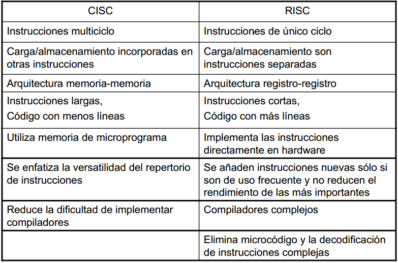
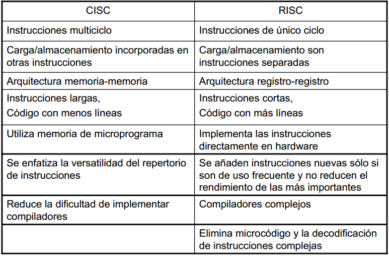

Buscando conservar la flexibilidad, pero mejorando el rendimiento. Se implementan instrucciones especiales que realizan funciones complejas, de manera que un programador puede encontrar con seguridad, una instrucción especial que realiza en hardware la función que el necesita. CISC vs RISC: Considere los siguientes fragmentos de programas: Diferencias entres estos dos
